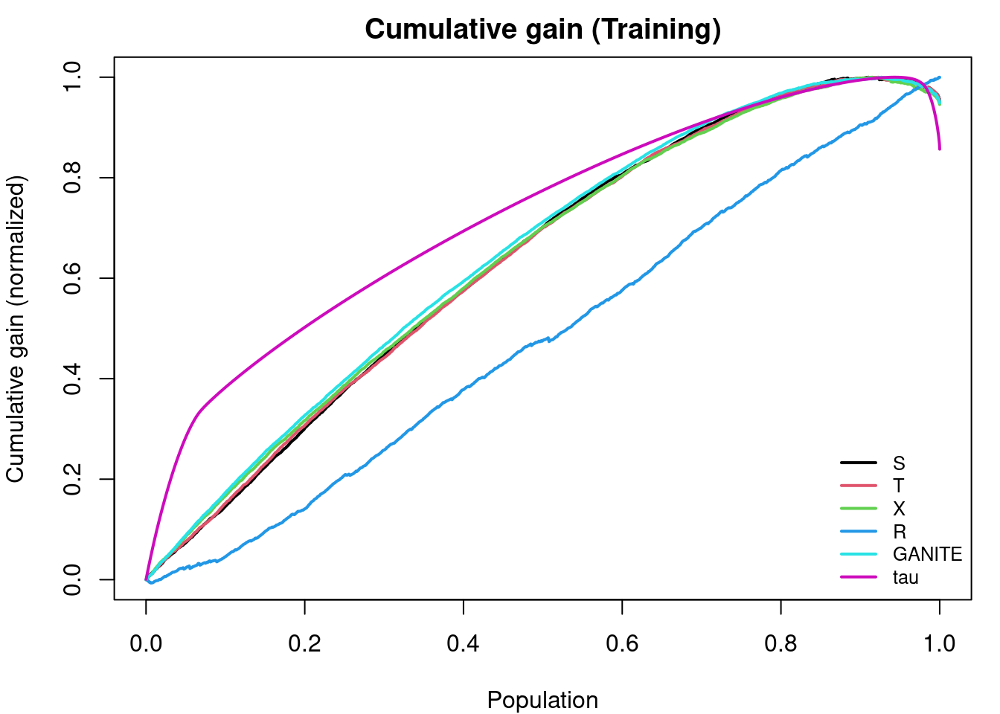
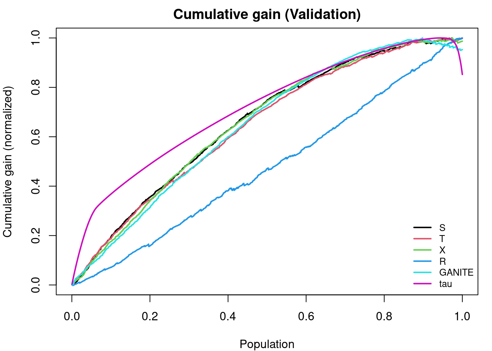

Code
packages <- c(
"tidyverse",
"plyr",
"RCausalML",
"causaldata",
"torch",
"ForCausality",
"mlbench",
"xgboost",
"future"
)
GANITE (Yoon, Jordon, and van der Schaar, 2018) estimates individual treatment effects (ITE) by recasting the counterfactual inference problem as a generative modeling task. The core challenge it addresses is fundamental to causal inference: for any individual, only the outcome under the treatment they actually received is ever observed, while the outcome under the alternative treatment remains counterfactual and unknowable. Rather than imputing a single point estimate for this missing outcome, GANITE uses a Generative Adversarial Network to learn the full distribution of potential outcomes — capturing uncertainty while remaining grounded in the observed data distribution.
GANITE (Yoon, Jordon, and van der Schaar, 2018) estimates individual treatment effects (ITE) by recasting counterfactual inference as a generative modeling task. The core challenge it addresses is fundamental to causal inference: for any individual, only the outcome under the treatment they actually received is observable, while the outcome under the alternative treatment remains counterfactual and unknowable. Rather than imputing a single point estimate for this missing outcome, GANITE uses a two-block GAN to learn the full distribution of potential outcomes — capturing epistemic uncertainty while remaining grounded in the observed data distribution.
In the potential outcomes framework, for each individual i we observe covariates \(X_i\), treatment \(T_i \in \{0, 1\}\), and factual outcome \(Y_i^F = Y_i(T_i)\). The counterfactual outcome \(Y_i^{CF} = Y_i(1 - T_i)\) is never observed. The individual treatment effect is therefore:
\[\tau_i = Y_i(1) - Y_i(0)\]
Standard regression models impute a single value for the missing \(Y_i^{CF}\). GANITE instead learns a conditional generative model \(p(Y(0), Y(1) \mid X)\), from which both potential outcomes and their uncertainty can be sampled.
GANITE cleanly separates two sub-problems: imputing missing counterfactuals (Block 1) and estimating treatment effects from the completed data (Block 2). The diagram below shows GANITE’s overall two-block pipeline from inputs through to the ITE estimate.

Block 1 — the counterfactual generator. The generator \(G\) takes the observed tuple \((X_i, T_i, Y_i^F)\) together with a noise vector \(Z_i \sim \mathcal{N}(0, I)\) and outputs an imputed counterfactual \(\tilde{Y}_i^{CF}\). A discriminator \(D\) is trained to distinguish real factual outcomes from generator-imputed counterfactuals, forcing \(G\) to produce counterfactuals that are indistinguishable in distribution from real outcomes. A factual reconstruction term \(\mathcal{L}_\text{factual}\) anchors the generator to the observed arm, preventing it from producing well-distributed but causally meaningless imputations.
Block 2 — the ITE generator. Once Block 1 has produced imputed counterfactuals for every training individual, a second generator \(\hat{G}\) is trained on the now-complete dataset \(\{X_i, \tilde{Y}_i^{CF}, Y_i^F\}\). Unlike \(G\), it takes only covariates and noise as input — treatment and factual outcome are no longer needed because the missing data problem has been resolved. A second discriminator \(\hat{D}\) distinguishes \(\hat{G}\)’s joint outcome pairs from the Block 1 pairs, ensuring the joint distribution of \((Y(0), Y(1))\) is respected rather than just the marginals independently. The final ITE estimate averages over multiple noise draws:
\[\hat{\tau}_i = \mathbb{E}_Z[\hat{G}(X_i, Z)_1 - \hat{G}(X_i, Z)_0]\]
Combined training objective:
\[\mathcal{L} = \mathcal{L}_\text{GAN}^\text{Block 1} + \alpha \cdot \mathcal{L}_\text{factual} + \mathcal{L}_\text{GAN}^\text{Block 2}\]
The shows how the three loss terms combine and the direction of gradient flow during training.

GANITE encodes three standard causal assumptions through its architecture. It assumes ignorability — that \(T \perp (Y(0), Y(1)) \mid X\), meaning all confounding is captured in the observed covariates. It enforces consistency through the factual reconstruction loss, which requires \(\hat{Y}_i(T_i) \approx Y_i^F\). It does not explicitly enforce overlap, but the adversarial training implicitly pressures the generator to produce plausible outcomes across both treatment arms for all covariate values.
One of GANITE’s most distinctive properties relative to deterministic estimators like TARNet or DragonNet is its native uncertainty quantification. Because both generators are stochastic, repeated forward passes through \(\hat{G}\) yield a distribution over ITE estimates:
\[\{\hat{\tau}_i^{(k)}\}_{k=1}^K = \{\hat{G}(X_i, Z^{(k)})_1 - \hat{G}(X_i, Z^{(k)})_0\}_{k=1}^K\]
This distribution reflects genuine epistemic uncertainty about the unobservable counterfactual — not merely variance from model fitting. Point-estimate models cannot provide this without additional machinery such as bootstrapping or conformal prediction. GANITE’s generative approach captures it directly in the model’s output distribution.
| Method | Generative | Uncertainty | Latent Confounders | Architecture |
|---|---|---|---|---|
| TARNet | No | No | No | Shared encoder + two heads |
| CFRNet | No | No | No | TARNet + MMD balancing |
| DragonNet | No | No | No | TARNet + propensity head |
| GANITE | Yes (GAN) | Yes | No | Two-block GAN |
GANITE is a generative model that captures uncertainty while operating in observed covariate space like TARNet, rather than learning a latent confounder structure.
Assumptions: - Strong ignorability holds in observed covariate space X - The GAN generator is expressive enough to capture the true distribution of potential outcomes - Sufficient sample size to train two coupled adversarial networks stably
Limitations: - GAN training is notoriously unstable — mode collapse, vanishing gradients, and sensitivity to hyperparameters are all practical concerns - The two-block training is sequential, meaning errors in Block 1 (counterfactual imputation) propagate into Block 2 (ITE estimation) with no mechanism to correct them - Evaluation is difficult because counterfactuals are never observed; standard loss functions cannot directly measure counterfactual accuracy on real data - Computationally expensive relative to simpler regression-based ITE estimators
We implement GANITE in R using the {RCausalML} package and compare it to meta-learners (S, T, X, R) on the IHDP semi-synthetic dataset and a synthetic dataset with hidden confounding. When CUDA is available, GANITE training runs on GPU for speed. When run_fast is TRUE, fewer iterations and a smaller network are used for faster rendering.
Following R packages are required to run this notebook. If any of these packages are not installed, you can install them using the code below:
tidyverse, plyr, RCausalML, causaldata, torch, ForCausality, mlbench, xgboost, future
packages <- c(
"tidyverse",
"plyr",
"RCausalML",
"causaldata",
"torch",
"ForCausality",
"mlbench",
"xgboost",
"future"
)# Install missing packages
# new_packages <- packages[!(packages %in% installed.packages()[, "Package"])]
# if (length(new_packages)) install.packages(new_packages)# Load packages with suppressed messages
invisible(lapply(packages, function(pkg) {
suppressPackageStartupMessages(library(pkg, character.only = TRUE))
}))# Check loaded packages
cat("Successfully loaded packages:\n")Successfully loaded packages: [1] "package:future" "package:xgboost" "package:mlbench"
[4] "package:ForCausality" "package:torch" "package:causaldata"
[7] "package:RCausalML" "package:plyr" "package:lubridate"
[10] "package:forcats" "package:stringr" "package:dplyr"
[13] "package:purrr" "package:readr" "package:tidyr"
[16] "package:tibble" "package:ggplot2" "package:tidyverse"
[19] "package:stats" "package:graphics" "package:grDevices"
[22] "package:utils" "package:datasets" "package:methods"
[25] "package:base" run_fast <- Sys.getenv("CAUSALML_FAST_RENDER", "TRUE") == "TRUE"
device_use <- NULL
if (requireNamespace("torch", quietly = TRUE)) {
device_use <- if (torch::cuda_is_available()) "cuda" else "cpu"
torch::torch_manual_seed(42L)
}
set.seed(42)We fit GANITE on a semi-synthetic dataset and compare its performance against meta-learners. Following the original Python example, training uses all nine IHDP files (ihdp_npci_1.csv through ihdp_npci_9.csv), concatenated and replicated 100 times, with evaluation on a held-out validation set. When run_fast = TRUE, a smaller replication factor is used to speed up rendering.
The dataset follows the standard IHDP column layout: treatment, y_factual, y_cfactual, mu0, mu1, and 25 covariates. Covariates are reordered so that binary features come first (indices 6–24 in Python; columns 7–25 in R), followed by continuous features (indices 0–5 in Python; columns 1–6 in R).
base_url <- "https://raw.githubusercontent.com/uber/causalml/master/docs/examples/data"
cols <- c("treatment", "y_factual", "y_cfactual", "mu0", "mu1", paste0("X", 0:24))
df <- NULL
for (i in 1:9) {
url <- sprintf("%s/ihdp_npci_%d.csv", base_url, i)
tmp <- tryCatch({
read.csv(url, header = FALSE)
}, error = function(e) NULL)
if (!is.null(tmp) && nrow(tmp) > 0) {
colnames(tmp) <- cols[seq_len(ncol(tmp))]
if (is.null(df)) df <- tmp else df <- rbind(df, tmp)
}
}
if (!is.null(df) && nrow(df) > 0) {
replications <- if (run_fast) 2L else 10L
df <- do.call(rbind, replicate(replications, df, simplify = FALSE))
message("Loaded IHDP (all 9 files × ", replications, " replications): ", nrow(df), " × ", ncol(df))
} else {
df <- NULL
}
if (is.null(df) || nrow(df) == 0) {
d <- synthetic_data(mode = 1, n = 5000, p = 25, sigma = 1.0, adj = 0)
df <- as.data.frame(d$X)
colnames(df) <- paste0("X", 0:(ncol(df) - 1))
df$treatment <- d$w
df$y_factual <- d$y
df$y_cfactual <- ifelse(d$w == 1, d$b - 0.5 * d$tau, d$b + 0.5 * d$tau)
df$mu0 <- d$b - 0.5 * d$tau
df$mu1 <- d$b + 0.5 * d$tau
message("Using synthetic fallback: ", nrow(df), " × ", ncol(df))
}
# Feature order: binary first (Python indices 6-24 -> R columns 7-25), then continuous (0-5 -> 1-6)
binfeats <- 7:25
contfeats <- 1:6
perm <- c(binfeats, contfeats)
xcols <- paste0("X", 0:24)
X <- as.matrix(df[, xcols][, perm])
treatment <- as.integer(df$treatment)
y <- as.numeric(df$y_factual)
y_cf <- as.numeric(df$y_cfactual)
mu0 <- as.numeric(df$mu0)
mu1 <- as.numeric(df$mu1)
tau <- ifelse(df$treatment == 1, df$y_factual - df$y_cfactual, df$y_cfactual - df$y_factual)
# Train/validation split (80/20, random_state=1 like Python)
n <- nrow(X)
set.seed(1)
ite <- sample(n, size = round(0.2 * n))
itr <- setdiff(seq_len(n), ite)
X_train <- X[itr, ]
treatment_train <- treatment[itr]
y_train <- y[itr]
tau_train <- tau[itr]
mu_0_train <- mu0[itr]
mu_1_train <- mu1[itr]
X_val <- X[ite, ]
treatment_val <- treatment[ite]
y_val <- y[ite]
tau_val <- tau[ite]
cat("Train size:", length(itr), "| Val size:", length(ite), "\n")Train size: 10757 | Val size: 2689 We fit GANITE (torch when available, else placeholder) on the training set and predict ITE on train and validation. When CUDA is available, training runs on GPU for speed. When run_fast is TRUE, fewer iterations and a smaller network are used for faster rendering.
gn <- ganite(X_train, treatment_train, y_train,
iterations = if (run_fast) 100L else 500L,
h_dim = if (run_fast) 25L else 50L,
batch_size = if (run_fast) 128L else 64L,
verbose = !run_fast, device = device_use)
ite_train_ganite <- as.vector(predict(gn, X_train))
ite_val_ganite <- as.vector(predict(gn, X_val))
ate_train_ganite <- mean(ite_train_ganite)
ate_val_ganite <- mean(ite_val_ganite)
cat("GANITE — ATE (train):", round(ate_train_ganite, 4), "| ATE (val):", round(ate_val_ganite, 4), "\n")GANITE — ATE (train): -1.4695 | ATE (val): -1.474 We fit propensity with elastic net (like Python’s ElasticNetPropensityModel) and S-, T-, X-, R-Learners with ranger (Python uses LGBM). X- and R-Learners use the propensity scores.
p_train <- propensity_glmnet(X_train, treatment_train)
p_val <- propensity_glmnet(X_val, treatment_val)
n_fold_meta <- if (run_fast) 3L else 5L
sl <- fit(SLearner(learner = "ranger"), X_train, treatment_train, y_train)
tl <- fit(TLearner(learner = "ranger"), X_train, treatment_train, y_train)
xl <- fit(XLearner(learner = "ranger"), X_train, treatment_train, y_train, p = p_train)
rl <- fit(RLearner(learner = "ranger", n_fold = n_fold_meta), X_train, treatment_train, y_train, p = p_train)
s_ite_train <- as.vector(predict(sl, X_train))
s_ite_val <- as.vector(predict(sl, X_val))
t_ite_train <- as.vector(predict(tl, X_train))
t_ite_val <- as.vector(predict(tl, X_val))
x_ite_train <- as.vector(predict(xl, X_train))
x_ite_val <- as.vector(predict(xl, X_val))
r_ite_train <- as.vector(predict(rl, X_train))
r_ite_val <- as.vector(predict(rl, X_val))Build the prediction data frame (S, T, X, R, GANITE, tau, w, y) and compute ATE, MAE (vs. true τ), and AUUC (mean of normalized cumulative gain). Then plot cumulative gain.
df_preds_train <- data.frame(
S = s_ite_train,
T = t_ite_train,
X = x_ite_train,
R = r_ite_train,
GANITE = ite_train_ganite,
tau = tau_train,
w = treatment_train,
y = y_train
)df_result_train <- data.frame(
Method = c("S", "T", "X", "R", "GANITE", "actual"),
ATE = c(
mean(s_ite_train), mean(t_ite_train), mean(x_ite_train), mean(r_ite_train),
ate_train_ganite, mean(tau_train)
)
)
tau_train_1d <- as.numeric(tau_train)
df_result_train$MAE <- c(
mean(abs(s_ite_train - tau_train_1d)),
mean(abs(t_ite_train - tau_train_1d)),
mean(abs(x_ite_train - tau_train_1d)),
mean(abs(r_ite_train - tau_train_1d)),
mean(abs(ite_train_ganite - tau_train_1d)),
NA_real_
)
# AUUC = mean of normalized cumulative gain (like Python auuc_score)
gain_train <- get_cumgain(df_preds_train, outcome_col = "y", treatment_col = "w",
treatment_effect_col = "tau", normalize = TRUE)
model_cols <- c("S", "T", "X", "R", "GANITE", "tau")
model_cols <- intersect(model_cols, colnames(gain_train))
auuc_train <- colMeans(gain_train[, model_cols, drop = FALSE])
df_result_train$AUUC <- NA_real_
for (m in names(auuc_train)) {
idx <- which(df_result_train$Method == if (m == "tau") "actual" else m)
if (length(idx)) df_result_train$AUUC[idx] <- auuc_train[m]
}
knitr::kable(df_result_train, digits = 4)| Method | ATE | MAE | AUUC |
|---|---|---|---|
| S | 3.7069 | 4.3227 | 0.6661 |
| T | 4.7164 | 4.9605 | 0.6655 |
| X | 4.5011 | 4.5619 | 0.6732 |
| R | 0.0154 | 7.6601 | 0.4797 |
| GANITE | -1.4695 | 7.6929 | 0.6812 |
| actual | 4.7843 | NA | NA |
plot_gain(df_preds_train, outcome_col = "y", treatment_col = "w",
treatment_effect_col = "tau",
model_cols = c("S", "T", "X", "R", "GANITE", "tau"),
main = "Cumulative gain (Training)", normalize = TRUE)
Same metrics and gain plot on the validation set.
df_preds_val <- data.frame(
S = s_ite_val,
T = t_ite_val,
X = x_ite_val,
R = r_ite_val,
GANITE = ite_val_ganite,
tau = tau_val,
w = treatment_val,
y = y_val
)df_result_val <- data.frame(
Method = c("S", "T", "X", "R", "GANITE", "actual"),
ATE = c(
mean(s_ite_val), mean(t_ite_val), mean(x_ite_val), mean(r_ite_val),
ate_val_ganite, mean(tau_val)
)
)
tau_val_1d <- as.numeric(tau_val)
df_result_val$MAE <- c(
mean(abs(s_ite_val - tau_val_1d)),
mean(abs(t_ite_val - tau_val_1d)),
mean(abs(x_ite_val - tau_val_1d)),
mean(abs(r_ite_val - tau_val_1d)),
mean(abs(ite_val_ganite - tau_val_1d)),
NA_real_
)
gain_val <- get_cumgain(df_preds_val, outcome_col = "y", treatment_col = "w",
treatment_effect_col = "tau", normalize = TRUE)
auuc_val <- colMeans(gain_val[, model_cols, drop = FALSE])
df_result_val$AUUC <- NA_real_
for (m in names(auuc_val)) {
idx <- which(df_result_val$Method == if (m == "tau") "actual" else m)
if (length(idx)) df_result_val$AUUC[idx] <- auuc_val[m]
}
knitr::kable(df_result_val, digits = 4)| Method | ATE | MAE | AUUC |
|---|---|---|---|
| S | 3.6576 | 4.3359 | 0.6573 |
| T | 4.6413 | 5.0483 | 0.6462 |
| X | 4.4188 | 4.5610 | 0.6640 |
| R | -0.0461 | 7.8137 | 0.4758 |
| GANITE | -1.4740 | 7.5928 | 0.6783 |
| actual | 4.6613 | NA | NA |
plot_gain(df_preds_val, outcome_col = "y", treatment_col = "w",
treatment_effect_col = "tau",
model_cols = c("S", "T", "X", "R", "GANITE", "tau"),
main = "Cumulative gain (Validation)", normalize = TRUE)
We generate a synthetic dataset with hidden confounding and fit both GANITE and meta-learners on it. When run_fast = TRUE, the sample size, number of training epochs, and network size are all reduced to speed up rendering. Training and validation performance are evaluated using the same metrics and GAIN plots throughout.
n_syn <- if (run_fast) 2000L else 10000L
d_syn <- simulate_hidden_confounder(n = n_syn, p = 5, sigma = 1.0, adj = 0)
X_syn <- d_syn$X
y_syn <- d_syn$y
w_syn <- d_syn$w
tau_syn <- d_syn$tau
b_syn <- d_syn$b
e_syn <- d_syn$e
set.seed(123)
n_syn <- nrow(X_syn)
idx_val <- sample(n_syn, size = round(0.2 * n_syn))
idx_train <- setdiff(seq_len(n_syn), idx_val)
X_syn_tr <- X_syn[idx_train, , drop = FALSE]
X_syn_val <- X_syn[idx_val, , drop = FALSE]
y_syn_tr <- y_syn[idx_train]
y_syn_val <- y_syn[idx_val]
w_syn_tr <- w_syn[idx_train]
w_syn_val <- w_syn[idx_val]
tau_syn_tr <- tau_syn[idx_train]
tau_syn_val <- tau_syn[idx_val]
p_syn_tr <- propensity_glmnet(X_syn_tr, w_syn_tr)
p_syn_val <- propensity_glmnet(X_syn_val, w_syn_val)# GANITE on synthetic (fewer iterations / smaller net when run_fast)
gn_syn <- ganite(X_syn_tr, w_syn_tr, y_syn_tr,
iterations = if (run_fast) 80L else 300L,
h_dim = if (run_fast) 25L else 50L,
batch_size = if (run_fast) 128L else 64L,
verbose = FALSE, device = device_use)
ite_syn_ganite_tr <- as.vector(predict(gn_syn, X_syn_tr))
ite_syn_ganite_val <- as.vector(predict(gn_syn, X_syn_val))
# Meta-learners: S/T/X/R with lm and ranger (like Python LR + XGB)
preds_syn_train <- list()
preds_syn_valid <- list()
for (learner_name in c("lm", "ranger")) {
sl_s <- fit(SLearner(learner = learner_name), X_syn_tr, w_syn_tr, y_syn_tr)
tl_s <- fit(TLearner(learner = learner_name), X_syn_tr, w_syn_tr, y_syn_tr)
xl_s <- fit(XLearner(learner = learner_name), X_syn_tr, w_syn_tr, y_syn_tr, p = p_syn_tr)
rl_s <- fit(RLearner(learner = learner_name, n_fold = n_fold_meta), X_syn_tr, w_syn_tr, y_syn_tr, p = p_syn_tr)
preds_syn_train[[paste0("S Learner (", learner_name, ")")]] <- as.vector(predict(sl_s, X_syn_tr))
preds_syn_train[[paste0("T Learner (", learner_name, ")")]] <- as.vector(predict(tl_s, X_syn_tr))
preds_syn_train[[paste0("X Learner (", learner_name, ")")]] <- as.vector(predict(xl_s, X_syn_tr))
preds_syn_train[[paste0("R Learner (", learner_name, ")")]] <- as.vector(predict(rl_s, X_syn_tr))
preds_syn_valid[[paste0("S Learner (", learner_name, ")")]] <- as.vector(predict(sl_s, X_syn_val))
preds_syn_valid[[paste0("T Learner (", learner_name, ")")]] <- as.vector(predict(tl_s, X_syn_val))
preds_syn_valid[[paste0("X Learner (", learner_name, ")")]] <- as.vector(predict(xl_s, X_syn_val))
preds_syn_valid[[paste0("R Learner (", learner_name, ")")]] <- as.vector(predict(rl_s, X_syn_val))
}
preds_syn_train[["GANITE"]] <- ite_syn_ganite_tr
preds_syn_valid[["GANITE"]] <- ite_syn_ganite_valactual_ate_train <- mean(tau_syn_tr)
actual_ate_val <- mean(tau_syn_val)
synthetic_summary_train <- data.frame(
Method = c(names(preds_syn_train), "Actuals"),
ATE = c(vapply(preds_syn_train, mean, numeric(1)), actual_ate_train),
MSE = c(vapply(preds_syn_train, function(p) mean((p - tau_syn_tr)^2), numeric(1)), NA_real_)
)
synthetic_summary_train$AbsPctErrorATE <- if (actual_ate_train != 0) abs(synthetic_summary_train$ATE / actual_ate_train - 1) else rep(NA_real_, nrow(synthetic_summary_train))
synthetic_summary_train$AbsPctErrorATE[synthetic_summary_train$Method == "Actuals"] <- NA
synthetic_summary_val <- data.frame(
Method = c(names(preds_syn_valid), "Actuals"),
ATE = c(vapply(preds_syn_valid, mean, numeric(1)), actual_ate_val),
MSE = c(vapply(preds_syn_valid, function(p) mean((p - tau_syn_val)^2), numeric(1)), NA_real_)
)
synthetic_summary_val$AbsPctErrorATE <- if (actual_ate_val != 0) abs(synthetic_summary_val$ATE / actual_ate_val - 1) else rep(NA_real_, nrow(synthetic_summary_val))
synthetic_summary_val$AbsPctErrorATE[synthetic_summary_val$Method == "Actuals"] <- NA
# AUUC on training
df_syn_train <- as.data.frame(preds_syn_train, stringsAsFactors = FALSE)
df_syn_train$tau <- tau_syn_tr
df_syn_train$w <- w_syn_tr
df_syn_train$y <- y_syn_tr
gain_syn_tr <- get_cumgain(df_syn_train, outcome_col = "y", treatment_col = "w",
treatment_effect_col = "tau", normalize = TRUE)
synthetic_summary_train$AUUC <- NA_real_
for (m in names(preds_syn_train)) {
if (m %in% colnames(gain_syn_tr))
synthetic_summary_train$AUUC[synthetic_summary_train$Method == m] <- mean(gain_syn_tr[, m])
}
# AUUC on validation
df_syn_val <- as.data.frame(preds_syn_valid, stringsAsFactors = FALSE)
df_syn_val$tau <- tau_syn_val
df_syn_val$w <- w_syn_val
df_syn_val$y <- y_syn_val
gain_syn <- get_cumgain(df_syn_val, outcome_col = "y", treatment_col = "w",
treatment_effect_col = "tau", normalize = TRUE)
model_cols_syn <- setdiff(colnames(gain_syn), c("tau"))
synthetic_summary_val$AUUC <- NA_real_
for (m in names(preds_syn_valid)) {
if (m %in% colnames(gain_syn))
synthetic_summary_val$AUUC[synthetic_summary_val$Method == m] <- mean(gain_syn[, m])
}
cat("Synthetic — Training summary:\n")Synthetic — Training summary:knitr::kable(synthetic_summary_train, digits = 4)| Method | ATE | MSE | AbsPctErrorATE | AUUC | |
|---|---|---|---|---|---|
| S Learner (lm) | S Learner (lm) | 0.8199 | 0.0324 | 0.1800 | NA |
| T Learner (lm) | T Learner (lm) | 0.8206 | 0.0342 | 0.1793 | NA |
| X Learner (lm) | X Learner (lm) | 0.8206 | 0.0342 | 0.1793 | NA |
| R Learner (lm) | R Learner (lm) | 0.8207 | 0.0330 | 0.1792 | NA |
| S Learner (ranger) | S Learner (ranger) | 0.7629 | 0.0853 | 0.2371 | NA |
| T Learner (ranger) | T Learner (ranger) | 0.7888 | 0.0802 | 0.2112 | NA |
| X Learner (ranger) | X Learner (ranger) | 0.7862 | 0.0670 | 0.2138 | NA |
| R Learner (ranger) | R Learner (ranger) | 0.7193 | 0.2001 | 0.2806 | NA |
| GANITE | GANITE | 0.5138 | 0.2615 | 0.4862 | 0.5 |
| Actuals | 0.9999 | NA | NA | NA |
cat("\nSynthetic — Validation summary:\n")
Synthetic — Validation summary:knitr::kable(synthetic_summary_val, digits = 4)| Method | ATE | MSE | AbsPctErrorATE | AUUC | |
|---|---|---|---|---|---|
| S Learner (lm) | S Learner (lm) | 0.8199 | 0.0324 | 0.1800 | NA |
| T Learner (lm) | T Learner (lm) | 0.8239 | 0.0336 | 0.1761 | NA |
| X Learner (lm) | X Learner (lm) | 0.8239 | 0.0336 | 0.1761 | NA |
| R Learner (lm) | R Learner (lm) | 0.8229 | 0.0325 | 0.1770 | NA |
| S Learner (ranger) | S Learner (ranger) | 0.7515 | 0.0761 | 0.2485 | NA |
| T Learner (ranger) | T Learner (ranger) | 0.7796 | 0.0693 | 0.2204 | NA |
| X Learner (ranger) | X Learner (ranger) | 0.7792 | 0.0646 | 0.2207 | NA |
| R Learner (ranger) | R Learner (ranger) | 0.7015 | 0.1196 | 0.2985 | NA |
| GANITE | GANITE | 0.5269 | 0.2541 | 0.4731 | 0.5 |
| Actuals | 0.9999 | NA | NA | NA |
GANITE reframes individual treatment effect estimation as a problem of learning the joint distribution of potential outcomes under a GAN framework. Its two-block design first imputes missing counterfactuals adversarially, then trains a dedicated ITE generator on the completed data. This gives GANITE two properties that discriminative models lack: a generative account of counterfactual uncertainty, and a distribution over ITE estimates rather than a single point prediction. The tradeoff is the well-known difficulty of GAN training and the absence of latent confounder modeling, which limits its applicability when observed covariates are noisy proxies rather than true confounders.
This implementation of GANITE in R allows practitioners to explore its performance on both semi-synthetic and synthetic datasets, comparing it against meta-learners. The results highlight the strengths and weaknesses of GANITE in practice, providing insights into when its generative approach may yield benefits over simpler regression-based methods.